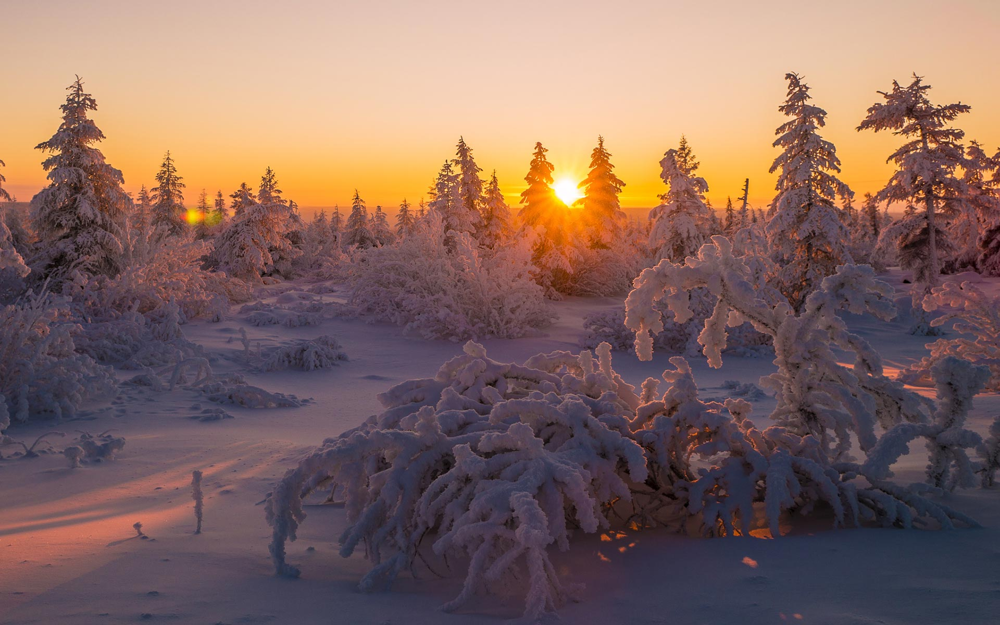

IARNA
de Vasile Alecsandri
Din văzduh cumplita iarnă cerne norii de zăpadă,
Lungi troiene călătoare adunate-n cer grămadă;
Fulgii zbor, plutesc în aer ca un roi de fluturi albi,
Răspândind fiori de gheață pe ai țării umeri dalbi.
Ziua ninge, noaptea ninge, dimineața ninge iară!
Cu o zale argintie se îmbracă mândra țară;
Soarele rotund și palid se prevede printre nori
Ca un vis de tinerețe printre anii trecători.
Tot e alb pe câmp, pe dealuri, împrejur, în depărtare,
Ca fantasme albe plopii înșirați se perd în zare,
Și pe-ntinderea pustie, fără urme, fără drum,
Se văd satele perdute sub clăbucii albi de fum.
Dar ninsoarea încetează, norii fug, doritul soare
Strălucește și dezmiardă oceanul de ninsoare.
Iată-o sanie ușoară care trece peste văi…
n văzduh voios răsună clinchete de zurgălăi.

RETETA NEGRESA
Pentru negresa (brownie)
4 oua intregi
300 g zahar tos
ž lingurita de sare
250 g unt cu min 80% grasime
200g ciocolata amaruie (min 40% cacao)
200 g faina alba
200 g nuci tocate mare (sau amestec cu alune de padure)
Pentru crema:
150 g crema de branza natur (Philadelphia, Almette sau similar)
40 g unt moale
100 g zahar pudra
vanilie (miezul de la ― pastaie sau 1 plic zahar vanilat)
coji confiate de portocala (optionale dar delicioase)
Pentru decor
50 g ciocolata amaruie topita
Calitati motrice
Într-o zi un băieţel s-a dus la şcoală.
Băieţelul era mic,
Iar şcoala era mare.
Dar când băieţelul a văzut
Că intrarea în clasa lui
Se făcea printr-o uşă direct din curte,
A fost foarte fericit,
Iar şcoala nu i s-a mai părut
Atât de mare ca la început.
Într-o dimineaţă
Când băieţelul se afla în clasă,
Profesoara le-a spus copiilor:
„Astăzi o să facem un desen.”
„Grozav”, s-a gândit băieţelul,
căci îi plăcea mult să deseneze.
Ştia să deseneze o mulţime de lucruri:
Lei şi tigri,
Pui şi vaci,
Trenuri şi vapoare ...
Şi şi-a scos cutia cu creioane colorate
Şi a început să deseneze.
Povestea baietelului
Dar profesoara le-a spus copiilor:
„Aşteptaţi ! Vă voi arăta eu cum să coloraţi.”
Şi a desenat o floare roşie cu tulpina verde.
„Acum puteţi începe”, a zis profesoara.
Băieţelul s-a uitat la floarea profesoarei,
Apoi s-a uitat la floarea lui.
A lui era mai frumoasă decât a profesoarei,
Dar n-a mai spus nimic.
A întors doar foaia
Şi a desenat o floare ca a profesoarei,
Era roşie cu tulpina verde.
Într-o altă zi,
Când băieţelul intrase în clasă prin
Uşa din curte,
Profesoara le-a spus copiilor:
„Azi o să facem ceva din argilă.”
„Grozav”, a spus băieţelul,
Căci îi plăcea să lucreze cu argilă:
Şerpi şi oameni de zăpadă,
Elefanţi şi camioane, ...
Şi a început să frământe bucata de argilă.
Dar profesoara a zis:
„Staţi ! Nu sunteţi gata să începeţi ...”
Şi a aşteptat până când toţi copiii au fost gata.
„Acum o să facem o farfurie”,
a zis profesoara.
„Grozav”, s-a gândit băieţelul,
căci îi plăcea să facă farfurii.
Şi a început să facă farfurii de toate formele şi mărimile.
Dar profesoara le-a spus copiilor:
„Aşteptaţi, vă arăt eu cum să faceţi !”
şi le-a arătat cum să facă o farfurie adâncă.
„Aşa, acum puteţi începe”, a zis profesoara.